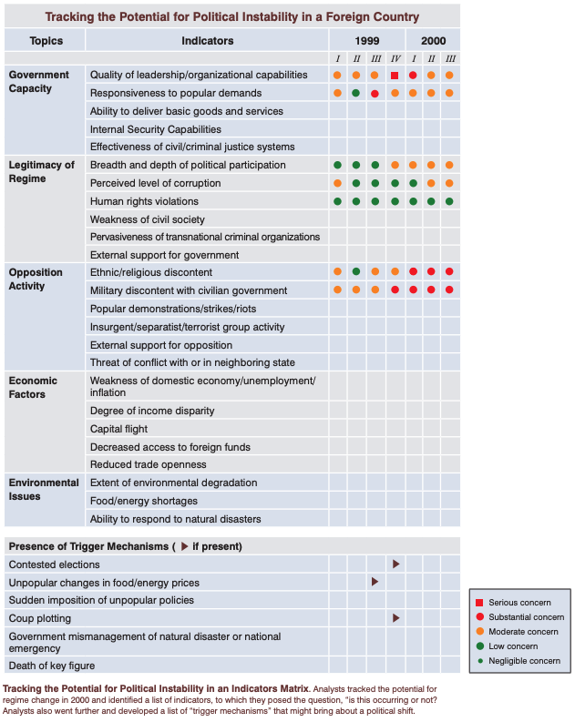
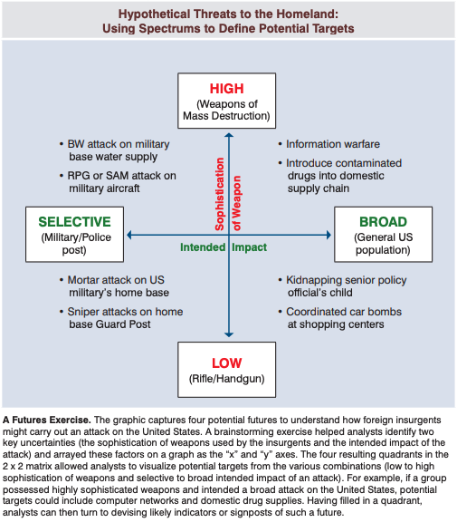

This is a place for me to take notes and review longer texts that are posted in the Links page. The contents are a mix of copy-and-pasted text from the source, as well as my own thoughts. I do not distinguish between the two. See the original source text for what is direct and what I wrote myself.
Blockquotes are essentiall direct quotes. For example, if the quote says "In our lives, we are constantly ...", I will shorten it to "We are constantly ...". No information is lost, but the note is shorter. Anything in square brackets [like this] is my personal note.
Link: The Gift of Fear: Survival Signals That Protect Us from Violence
Background: Gavin de Becker is considered one of the world's leading security specialists, focusing on government and high-profile figures, e.g., Jeff Bezos.
[Violence statistics presented are meant] to increase the likelihood that you will believe it is at least possible that you or someone you care for will be a victim at some time. That belief is a key element in recognizing when you are in the presence of danger.
The human violence we abhor and fear the most, that which we call "random" and "senseless", is neither. It always has purpose and meaning to the perpetrator.
...intuition is soaring flight compared to the plodding of logic. The human brain is never more efficient or invested than when its host is at risk.
We tend to give our full attention to risks that are beyond our control while ignoring those that we feel in charge of, even though the latter are far more likely to harm us.
We are constantly bombarded with kangaroo signals [false information that is purported to be true] masquerading as knowledge, and our intuition relies on us to decide what we will give credence to.
"I don't believe in such a thing as the criminal mind. Everyone's mind is criminal; we're all capable of criminal fantasies and thoughts." [This should also include actions.]
The stakes of some predictions require that I intimately recognize and accept what I observe in others no matter who they are, no matter what they have done, no matter what they might do, no matter where it takes me in myself.
Acts of extraordinary violence happen, and we cannot learn why they happen by looking at rare behavior as if it is something outsides ourselves. That idea you just conjured was in you, and thus it is part of us. To really work toward prediction and prevention, we must accept that these acts are done by people included in the "we" of humanity [as opposed to "them"].
One thing that does predict violent criminality is violence in one's childhood. Research confirmed that 100 percent of serial killers had been abused as children with violence, neglect, or humiliation.
Recklessness and bravado are features of many violent people.
Seeing a vision of the future better than most people because the present is not distracting is a characteristic common to many criminals. You can spot this in people who do not react as you might to shocking things.
The need to be in control is another characteristic common to predatory criminals.
These notes are from pages 1-55. I stopped after that out of boredom (not bored of the book, but bored of entering all these notes, as I forgot to make important passages with a pen).
Link: Vagabonding: An Uncommon Guide to the Art of Long-Term World Travel
In reality, long-term travel has nothing to do with demographics—age, ideology, income—and everything to do with personal outlook...it's about being a student of daily life...Vagabonding is about looking for adventure in normal life, and normal life within adventure. Vagabonding is an attitude—a friendly interest in people, places, and things that makes a person an explorer in the truest, most vivid sense of the word.
Most of us have never taken such vows [saying you'll travel in the future], but we choose to live like monks anyway, rooting ourselves to a home or a career and using the future as a kind of phony ritual that justifies the present.
As citizens of a stable, prosperous democracy, any one of us has the power to create our own free time, outside the whims of federal laws and private-sector policies. Indeed, if the clock appears to move faster than it did in sixth grade, it's only because we haven't actualized our power as adults to set our own recess schedule.
The act of quitting [a job or career] "means not giving up, but moving on; changing direction not because something doesn't agree with you, but because you don't agree with something. It's not a complaint, but a positive choice, and not a stop in one's journey, but a step in a better direction. Quitting means taking a turn so as to be sure you're still moving in the direction of your dreams."
The notion that material is somehow more important to life than personal investment is exactly what leads so many of us to believe we could never afford to go vagabonding.
On a basic level, there are three general methods to simplifying your life: stopping expansion [don't add any new items to your life], reining in your routine [start living more humbly, e.g., cook meals instead of eating out, do free activities instead of paid ones, etc.], and reducing clutter [downsizing current inventory].
"Preparation no more spoils the chance for spontaneity and serendipity than discipline ruins the opportunity for genuine self-expression in sports, acting, or the tea ceremony...The goal of preparation is not knowing exactly where you'll go but being confident nonetheless that you'll get there."
As a general rule, good guidebooks Contain useful, condensed travel information relating to a specific region: historical and cultural background; pointers regarding local languages in customs; data on the climate and environment; advice and getting visas and changing money; tips for staying healthy and out of harm's way; instructions for using local transportation; and recommendations for lodging, food, and entertainment.
The value of your travels does not hinge on how many stamps you have in your passport when you get home—and the slow, nuanced experience of a single country is always better than the hurried, superficial experience of forty countries.
Find a partner who exudes an attitude of realism and open-mindedness; these are the virtues you yourself will want to cultivate.
[Bring on your travels] as little as possible... a guidebook; a pair of sandals; standard hygiene items; relevant medicines; earplugs; small gift items; simple, function clothes and one nice outfit for customs checks and social occasions; pocketknife; flashlight; sunglasses; day pack; camera; boots or walking shoes; padlock.
The secret to staying intrigued on the road—the secret to truly being different from the frustrated masses—is this: Don't set limits. Don't set limits on what you can or can't do. Don't set limits on what is or sin't worthy of your time. Dare yourself to "play games" with your day: watch, wait, listen; allow things to happen.
The secret of adventure is not to carefully seek it out but to travel in such a way that it finds you.
Learn to treasure your worst experiences as gripping new chapters in the epic novel that is your life. "Adventurous men enjoy shipwrecks, mutinies, earthquakes, conflagrations, and all kinds of unpleasant experiences,"" wrote Bertrand Russell. "'So this is what an earthquake feels like', and it gives them pleasure to have their knowledge of the world increased by this new item."
Wherever you go, a few basic precautions will apply. Avoid bringing expensive or irreplaceable, and don't flaunt what wealth you do have. Keep cash and traveler's checks in discreet places, and be wary of public distractions or dense crowds. Keep extra cash in safe. In tourist areas, be wary of new "friends".
Link: Tradecraft Primer: Structured Analytic Techniques for Improving Intelligence Analysis
From the abstract:
This primer highlights structured analytic techniques—some widely used in the private sector and academia, some unique to the intelligence profession...the primer highlights how structured analytic techniques can help one challenge judgments, identify mental mindsets, stimulate creativity, and manage uncertainty. In short, incorporating regular use of techniques such as these can enable one to structure thinking for wrestling with difficult questions.
First, the "relevant and diagnostic information" must be sorted out of the heap of total information, including information that is placed there to mislead. Once the pertinent information has been collected, a "systematic approach that considers a range of alternative explanations and outcomes" can be applied to examine the problem from a holistic standpoint, such that "potentially relevant hypotheses and supporting information" are all examined.
When analyzing the information, bias are guaranteed to appear, but care should be taken to recognize and mitigate the risk they pose to the analysis. Examples of biases below:

More resources on biases and fallacies:
Examples of "strategic assumptions that were not challenged" are provided. Questions in bold, answers in bullet points (the last five have spoilers to allow the reader to consider the answer before reading it).
1941 World War II: Japan would avoid all-out war because it recognized US military superiority
1950s Korean War: China would not cross the Yalu River in support of the North Korean government.
1962 Cuban Missile Crisis: The Soviet Union would not introduce offensive nuclear weapons into Cuba.
1973 Yom Kippur War: Arabs knew they could not win because they had failed to cooperate in the past and still lacked sufficient air defenses to counter Israeli airpower.
1989 German Unification: East Germany could not unify with the West Germany against the wishes of the Soviet Union.
1998 Indian Nuclear Test: Conducting a nuclear test risked international condemnation and US sanctions and would threaten a newly elected coalition government.
2003 Iraq's WMD Programs: Saddam failed to cooperate with UN inspectors because he was continuing to develop weapons of mass destruction.
These situations are viewed from a U.S. perspective, and seem to fail to take into account foreign cultures contributing to behavior and perceived miscalculations. A few not-directly-related-to-national-security examples:
When interacting with people from a different culture and they act in a different and/or offensive manner not consistent with the location's norms, consider the culture as the cause, not malice. This can be thought of as a form of Hanlon's razor, where stupidity is replaced by ignorance ("never attribute to malice that which is adequately explained by ignorance").
The analytic techniques in this primer are designed to help individual analysts, as well as teams, explore and challenge their analytical arguments and mindsets. ... All the techniques are included because they have helped other analysts avoid rigid ways of thinking or assisted them in exploring new outcomes or implications of an intelligence problem. ... The techniques are grouped by their purpose: diagnostic techniques are primarily aimed at making analytic arguments, assumptions, or intelligence gaps more transparent; contrarian techniques explicitly challenge current thinking; and imaginative thinking techniques aim at developing new insights, different perspectives and/or develop alternative outcomes.
Key assumptions should be analyzed at the beginning of a project and consist of "any hypothesis that analysts have accepted to be true and which forms the basis of the assessment". These are often looked at as obvious, but can include small intricacies that can render the entire assumption null and/or point to a better assumption, resulting in an oversight being dangerous to the entire project. For example, "when economists assess the prospects for foreign economic reforms, they may consciously, or not, assume a degree of political stability in those countries or the region that may or may not exist in the future". What happens when a massive regime change occurs and the economic and political environment is thrown into turmoil? The projections should have a multitude of outcomes that account for each plausible scenario.
Benefits:
These benefits are not just for that one specific project, but also ongoing and future projects: honing these skills allow better checks to be made in the future. Some situations are quite similar to one another, and using the same line of thinking from project A may be applicable—directly or indirectly—to project B.
Method:
Questions to ask during the process:
Of course, an analysis is a work-in-progress and only complete when the deadline passes or the analyzed content is no longer relevant. As new information is processed and assumptions made, they should be put through the same rigorous checking as the original ones.
Quality of information should be prioritized over quantity. Given 10 dubious pieces of information vs. 2 veracious pieces of information, the latter is to be preferred. Of course the former should be analyzed, but the higher-quality information should be given priority in the analysis process.
How to go about checking the quality? A few ways:
Benefits:
The method generally involves using a database, which is a good method to both store and review information. It allows for quick and easy access, notes, and virtually-unlimited storage. From there, analysts can:
Some events may indicate major change is coming, e.g., democratic protests in a non-democratic country (while the government is unlikely to change, this is nonetheless an essentially-required step towards democratization). "The technique can be used whenever an analyst needs to track an event over time to monitor and evaluate changes."
By laying out a list of critical variables, analysts also will be generating hypotheses regarding why they expect to see the presence of such factors. In so doing, analysts make the analytic line much more transparent and available for scrutiny by others.
The method:
Developing two lists of indicators for each hypothesis or scenario may prove useful to distinguish between indicators that a development is or is not emerging. This is particularly useful in a “What If?” Analysis, when it is important to make a case that a certain event is unlikely to happen.
Some indicators that aren't labeled as a concern are surprising. Take "Insurgent/separatist/terrorist group activity". Is this not a major issue for the instability in Afghanistan and Iraq? Others seem surprising at first glance, but don't hold up after examination. "Food/energy shortages" occur all the time in North Korea, yet the regime still holds strong.
When sorting through and evaluating large amounts of data with a team, there are bound to be multiple hypotheses formed. It is important to compare and contrast the hypotheses and what evidence is being used to support them. If agreement is unanimous, the hypothesis is more likely to be strong; if there is disagreement, the specific aspects can be discussed and resolved to one or combined to form a hybrid hypothesis.
There are a few reasons to analyze competing hypothesis:
In order to avoid focusing on one hypothesis or giving too much preference to certain information, everything should be examined equally and preference only applied once all information has been processed. Even if some information seems irrelevant and/or false, it should still be considered, as it may turn out to be relevant and/or true.
The process consists of:
These steps allow for a holistic process of elimination and review for all hypotheses and supporting evidence.
Despite a strong hypothesis and supporting evidence, there can still be flaws in assumptions or evidence. A Devil's Advocate approach should be used: simply try to find anything and everything wrong and/or weak with the hypothesis or supporting assumptions. Using DA in conjunction with the steel man can make for robust analyses. Even if nothing weak nor false is found, it still proves the original analysis was strong. If flaws are found, it allows those to be fixed.
Benefits:
Method:
Team A/Team B (TAB) is similar to Devil's Advocacy, but not identical. In Team A/Team B, each time takes sides of two strong, competing hypotheses. Differences are then compared and analyzed for accuracy.
Benefits:
Method:
High-impact/low-probability events are also known as black swan events.
The event should not be brushed off due to its low probability: instead, the impact should be the main concern. After all, if the event happens and there was no contingency plan, there will be an unorganized scramble to react. The seemingly low probability may increase after a brief examination, as analysts may uncover important information in the process.
Method:
Imagine if a low-probability event has occurred. What could have caused it?
This type of analysis allows analysts to get imaginative about causes while not considering the probability, especially if there is little information available. Brainstorming these causes may also point to additional sources of information not otherwise considered.
Method:
Brainstorming is simple: come up with new ideas related to the problem at hand. It can be applied to virtually any problem and used in conjunction with every technique discussed thus far. It can develop creativity and allow outside-the-box thinking.
While an unstructured process (can it really be called a process?) may produce some results, following a set of instructions and brainstorming at each step works best. While brainstorming, there are no wrong or weird answers. Everyone is equal. Everything, including the source of the idea (why did you come up with that?) should be considered. Involving someone unfamiliar with the topic helps, as it brings in a new perspective.
[Outside-in thinking is] used to identify the full range of basic forces, factors, and trends that would indirectly shape an issue.
encourages analysts to get away from their immediate analytic tasks (the so-called “inbox”) and think about their issues in a wider conceptual and contextual framework. By recasting the problem in much broader and fundamental terms, analysts are more likely to uncover additional factors, an important dynamic, or a relevant alternative hypothesis.
Method:
Red teams have origins in military applications, where analysts would play the role of the enemy (red team) and brainstorm methods to harm the friendlies (blue team). Red teams are important to use when trying to look at a situation from another culture's perspective (see the end of Introduction for examples). Foreign cultures do not follow the same expectations or behaviors as Americans, and this should anticipated well in advance. Knowledge of foreign cultures or access to individuals of that culture is key, as they have first-hand experience and can advise based on their perspective.
Personality should also be considered. It is known that some leaders are ruthless in ruling and others have values not accepted by Americans.
Method:
Some situations can be complex, have too much uncertainty, or too little information to choose only one hypothesis/outcome. The Alternative Futures analysis instead comes up with multiple outcomes that can occur. This takes significant resources (experts, policymakers, time) and " is best reserved for situations that could potentially pose grave threats or otherwise have significant consequences".
Method:
While the techniques presented are all slightly different, the general idea of each is almost identical. Below is a brief summary: